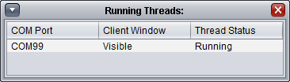

By clicking on Configuration > Show Threads a small window will be shown that lists all of the windows open that are monitoring COM ports. This can be useful if there are numerous windows shown within the screen.
It will show the status of the monitoring thread (which receives and processes the data) and the window used to display data to you. It is only updated when the window is opened and so is not a dynamic representation of what is happening in the system.
